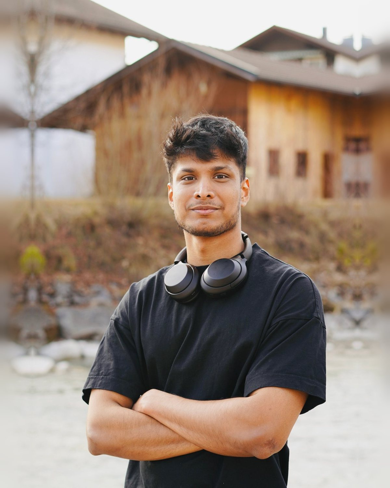

Data & AI · Analytics · Automation
Prem Kishore Venkatakrishnan. M.Eng. student in AI Engineering of Autonomous Systems and working student in Data & BI at Siemens Healthineers, based in Germany.
See my journey
From IT student to data engineer to AI engineer, with Power BI and finance along the way.
B.Tech in Information Technology, St. Joseph’s College of Engineering, India. Machine learning pulled me in through projects: a handwriting calculator that compared SVM, MLP and CNN models, and a hospital blockchain written from scratch.
Data Engineer, Accenture India (Management & Governance). I built ETL pipelines and kept Tableau reports running across Snowflake, Informatica, Amazon Redshift, Spark and Hive, and supported the move from Informatica to Snowflake, which improved data-processing efficiency by 30%.
M.Eng. in AI Engineering of Autonomous Systems, TH Ingolstadt, Germany. Here the work became agents and autonomy: a Q-learning Pikachu, motion planning for overtaking, a seminar on Groq’s chip. My thesis looks at how people detect AI-generated videos.
Working student, Siemens Healthineers (PLM & SCM Finance, Automation & Digitalization). I turn Finance requirements into Power BI dashboards and KPIs for business cases, profit centers, milestones and unit reporting, with views for team leads, project leads and management, drawing on SAP P41, PAM and Esprit/HOP data.
Data and BI experience on one side, AI engineering on the other. I’m looking for data, AI and analytics roles where the two meet.
Hover over a skill to light up its branch.
Six areas, from data pipelines to autonomous systems. Hover over a hexagon to see what sits inside it.
Hover over a project for a quick look. Open it to read the whole story.
Open to data, AI and analytics roles anywhere in Germany.